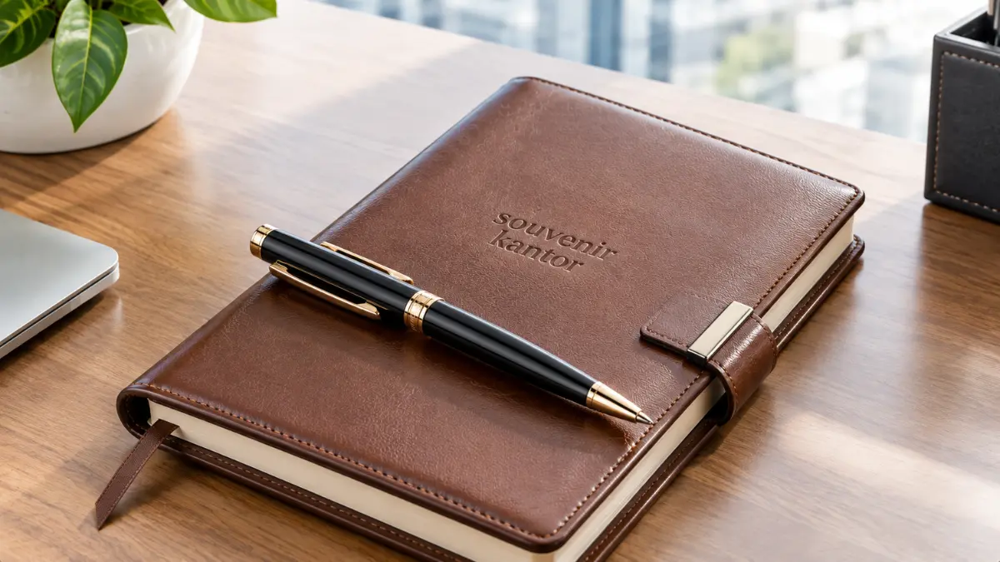

Gift Set Perusahaan Custom Terbaik untuk Klien dan Karyawan
 Arinda Zakia (rnd)
11 September 2026
6 Menit Baca
Arinda Zakia (rnd)
11 September 2026
6 Menit Baca

Souvenir Kantor Jakarta - Gift set perusahaan custom adalah paket suvenir bermerek yang dirancang khusus untuk klien atau karyawan guna memperkuat citra profesional dan mempererat hubungan bisnis. Paket ini umumnya berisi kombinasi alat tulis, aksesoris kerja, atau produk lifestyle dengan branding logo perusahaan yang memberikan dampak promosi berkelanjutan serta efisiensi biaya jangka panjang.
Gift set perusahaan custom adalah paket suvenir bermerek yang dirancang khusus untuk klien atau karyawan guna memperkuat citra profesional dan mempererat hubungan bisnis. Paket ini umumnya berisi kombinasi alat tulis, aksesoris kerja, atau produk lifestyle dengan branding logo perusahaan.
Souvenir Kantor Jakarta menyediakan layanan pembuatan gift set custom lengkap, mulai dari desain hingga produksi massal. Gift set perusahaan custom berfungsi sebagai media branding sekaligus bentuk apresiasi. Kombinasi item disesuaikan dengan target penerima: klien VIP atau karyawan internal. Kualitas material dan detail personalisasi menentukan kesan yang tertinggal di benak penerima.
Souvenir Kantor Jakarta menawarkan katalog lengkap dan proses pemesanan yang mudah melalui satu pintu. Pemesanan dalam jumlah besar dapat disesuaikan dengan anggaran dan tenggat waktu perusahaan Anda secara fleksibel.
- Mengapa Investasi pada Gift Set Perusahaan Custom Itu Penting?
- Solusi Gift Set Custom Premium dari Souvenir Kantor Jakarta
- 1. Set Premium dan Eksklusif untuk Klien
- 2. Set Apresiasi dan Fungsional untuk Karyawan
- Perbandingan Karakteristik: Gift Set Klien vs Gift Set Karyawan
- Pesan Kebutuhan Souvenir Perusahaan Anda Hari Ini
- Kesimpulan
- FAQ Seputar Gift Set Perusahaan Custom
Mengapa Investasi pada Gift Set Perusahaan Custom Itu Penting?
Investasi pada gift set perusahaan custom penting karena suvenir bermerek terbukti meningkatkan brand recall, memperkuat loyalitas, dan menciptakan kesan profesional yang bertahan lama dibanding sekadar transaksi bisnis biasa.
Menurut studi Ad Impressions dari Promotional Products Association International (PPAI), lebih dari 80 persen responden dapat mengingat nama pengiklan pada produk promosi yang mereka terima dalam kurun waktu 12 bulan terakhir. Data ini menunjukkan bahwa gift set fisik memiliki daya ingat yang jauh lebih kuat dibandingkan iklan digital yang mudah terlupakan begitu saja.
Selain aspek branding, gift set perusahaan juga berperan krusial dalam membangun hubungan emosional yang erat. Klien yang menerima hadiah berkualitas cenderung merasa dihargai dan lebih terbuka pada kelanjutan kerja sama bisnis. Di sisi internal, karyawan yang menerima apresiasi berupa gift set juga menunjukkan tingkat keterlibatan kerja (employee engagement) yang lebih tinggi, sebagaimana dicatat dalam berbagai survei ketenagakerjaan pada beberapa tahun terakhir.
Faktor lain yang membuat investasi ini penting adalah efisiensi biaya jangka panjang. Dibandingkan dengan kampanye marketing berulang, gift set custom hanya memerlukan biaya produksi satu kali, namun dampaknya dapat dirasakan setiap kali penerima menggunakan produk tersebut. Misalnya tumbler yang dipakai setiap hari saat beraktivitas atau notebook eksklusif yang dibawa ke berbagai agenda pertemuan penting.

Solusi Gift Set Custom Premium dari Souvenir Kantor Jakarta
Souvenir Kantor Jakarta menghadirkan solusi gift set custom premium yang dirancang khusus untuk kebutuhan klien maupun karyawan, lengkap dengan opsi personalisasi logo, warna korporat, dan kemasan box eksklusif sesuai identitas brand perusahaan Anda.
Sebagai penyedia layanan souvenir korporat berpengalaman, kami memahami bahwa setiap perusahaan memiliki kebutuhan, tujuan acara, dan alokasi anggaran yang berbeda. Oleh karena itu, katalog gift set kami dibagi menjadi dua kategori utama agar pengambil keputusan lebih mudah menentukan pilihan yang paling tepat.
1. Set Premium dan Eksklusif untuk Klien
Set premium untuk klien dirancang dengan material berkualitas tinggi seperti kulit asli, kayu mewah, atau logam berkelas untuk menciptakan kesan prestisius yang mencerminkan keseriusan perusahaan dalam menjalin kemitraan bisnis jangka panjang.
Kategori ini biasanya mencakup kombinasi item yang dikemas rapi dalam rigid box eksklusif:
- Pulpen Eksekutif: Pulpen metal rollerball dengan sentuhan ukiran laser grafir logo yang presisi.
- Leather Notebook: Buku agenda bersampul kulit sintetis premium atau kulit asli dengan finishing logo emboss/deboss emas.
- Tempat Kartu Nama: Card holder elegan berbahan paduan logam stainless steel dan kulit bertekstur mewah.
Setiap item dapat dipersonalisasi dengan logo timbul atau ukiran nama penerima untuk memberi sentuhan personal yang tak ternilai. Set ini sangat cocok digunakan pada momen penandatanganan kontrak, kunjungan klien korporat VIP, maupun perhelatan gala dinner tahunan perusahaan.
2. Set Apresiasi dan Fungsional untuk Karyawan
Set apresiasi untuk karyawan difokuskan pada kepraktisan sehari-hari, sehingga bisa langsung digunakan dalam aktivitas kerja di kantor maupun kehidupan pribadi, sekaligus menjadi pengingat konsisten terhadap kultur dan identitas perusahaan.
Isi paket ini umumnya berupa kombinasi produk esensial:
- Tumbler: Botol minum vacuum flask stainless steel penahan panas dan dingin berlogo UV print tahan lama.
- Tote Bag / Tas Laptop: Tas serbaguna berbahan kanvas tebal atau softcase laptop pelindung perangkat kerja.
- Agenda Planner: Buku catatan kerja harian yang membantu manajemen waktu dan produktivitas staf.
- Aksesoris Teknologi: Flashdisk kartu kustom dan power bank berdaya tahan tinggi dengan cetak logo penuh warna.
Kombinasi ini dipilih karena tingkat penggunaannya yang sangat tinggi dalam rutinitas kerja harian, sehingga logo perusahaan lebih sering terlihat baik oleh karyawan sendiri maupun publik di ruang kerja bersama. Paket seperti ini sangat populer untuk program onboarding kit karyawan baru, apresiasi akhir tahun, maupun perayaan pencapaian target performa tim.
Souvenir Kantor Jakarta juga melayani pengiriman ke berbagai kota besar termasuk Semarang, Bandung, Surabaya, Medan, dan Makassar, sehingga perusahaan yang berlokasi di luar Jakarta tetap dapat menikmati layanan produksi dan konsultasi desain secara menyeluruh tanpa kendala jarak.
Perbandingan Karakteristik: Gift Set Klien vs Gift Set Karyawan
Untuk membantu menentukan konfigurasi merchandise yang sesuai dengan target penerima dan tujuan program, berikut tabel perbandingan karakteristik utama kedua tipe gift set:
| Aspek | Gift Set Klien VIP | Gift Set Apresiasi Karyawan |
|---|---|---|
| Fokus Utama | Prestise, kemewahan, dan penguatan relasi kemitraan | Fungsionalitas harian, motivasi kerja, dan loyalitas internal |
| Pilihan Item | Pulpen eksekutif, leather notebook, card holder, plakat | Tumbler stainless, tote bag, flashdisk, power bank, planner |
| Material & Finishing | Kulit asli/sintetis premium, logam grafir laser, kayu poles | Plastik ABS kokoh, stainless SUS304, kain kanvas, cetak UV |
| Jenis Kemasan | Hardbox eksklusif dengan velvet inner lining & pita foil | Craft box custom sleeve, tote bag branded, pouch spunbond |
| Momen Pemberian | Signing kontrak bisnis, gala dinner, kunjungan direksi | Onboarding karyawan, award tahunan, gathering perusahaan |
Pesan Kebutuhan Souvenir Perusahaan Anda Hari Ini
Memesan gift set perusahaan custom sebaiknya dilakukan jauh sebelum acara berlangsung agar proses desain, pembuatan digital mockup, produksi massal, dan quality control dapat berjalan maksimal tanpa terburu-buru.
Proses pemesanan di Souvenir Kantor Jakarta dirancang sangat sederhana. Anda cukup menentukan target penerima, perkiraan jumlah unit, dan alokasi anggaran yang tersedia, lalu tim kami akan membantu menyusun rekomendasi kombinasi item yang paling sesuai dan efisien.
Setelah desain dan spesifikasi disetujui, produksi dapat dikerjakan secara presisi sesuai skala kebutuhan Anda, baik untuk puluhan hingga ribuan unit dengan standar mutu yang konsisten.
Jangan biarkan momen penting perusahaan Anda berlalu tanpa kesan yang membekas. Kunjungi katalog lengkap kami di Souvenir Kantor Jakarta dan konsultasikan kebutuhan gift set perusahaan custom Anda sekarang juga bersama Souvenir Kantor Jakarta.
Wujudkan Gift Set Perusahaan Eksklusif Sesuai Identitas Brand Anda
Konsultasikan pilihan paket gift set, kustomisasi logo presisi, mockup desain gratis, dan penawaran harga grosir terbaik bersama Souvenir Kantor Jakarta.
Chat WhatsApp SekarangKesimpulan
Gift set perusahaan custom bukan sekadar hadiah, melainkan investasi jangka panjang untuk citra dan hubungan bisnis perusahaan. Pemilihan item yang tepat, kualitas material, dan proses produksi yang rapi akan menentukan kesan yang tertinggal di benak klien maupun karyawan.
Percayakan kebutuhan gift set perusahaan custom Anda kepada Souvenir Kantor Jakarta melalui website Souvenir Kantor Jakarta untuk hasil yang profesional, berkualitas tinggi, dan tepat waktu.
FAQ Seputar Gift Set Perusahaan Custom